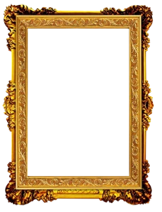
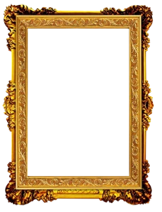

 TV-Kartina@bk.ru
TV-Kartina@bk.ru
| |||||
маскировка телевизора в интерьере, телевизор в багетной раме телевизор как картина, телевизор в багете спрятать, телевизор картина поднимается | Багет и печать картин на холсте. Выбор картин для системы маскировки телевизора зависит только от Вашего воображения. Используя цифровые технологии печати на холсте высокого разрешения, можно предельно точно воспроизвести не только любую картину, но и вашу фотографию. Её при этом возможно стилизовать под произведение, выполненное художником. Если картина украшает ваше офисное помещение, на ней может быть воспроизведен логотип вашей фирмы, изображение соответствующее тематике вашей деятельностию 
Фотопечать на натуральном холсте (производство Италия),
осуществляется на широкоформатном интерьерном плоттере с качеством печати 1440 dpi. ...ВАРИАНТЫ КАРТИН МОЖНО ПОСМОТРЕТЬ ЗДЕСЬ... ...ВАРИАНТЫ БАГЕТА ЗДЕСЬ... 
Наверняка все вы видели старые рамы в музеях, которые от времени рассыхаются и искривляются, это происходит от того, что дерево сильно нуждается в температурном режиме и режиме влажности. Сегодня напыления и накатки на пластиковый багет настолько продвинулись в качестве, что на глаз даже под лупой не всегда можно определить, из какого материала сделана рама. Кроме того, ассортимент цветов и форм настолько широк, что вы можете выбрать практически все, что хотите. С развитием полимерной промышленности особую популярность приобрел именно пластиковый багет, за счет различных текстур, цветов, легкости и долговечности. Преимущества пластикового багета: не боится влажности, имеет изысканный вид. Качество его орнамента не уступает орнаменту из древесной пасты на багетах с основой из дерева. |
 WhatsApp
+7 (985) 385 - 1880
WhatsApp
+7 (985) 385 - 1880
 TV-Kartina @ bk.ru
TV-Kartina @ bk.ru
|